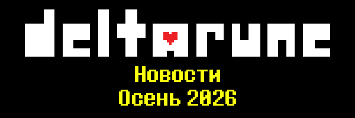
Вот и осень... Не верится, что лето уже кончилось!
...
Хватит вытаскивать рождественские украшения.

|
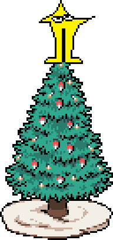 |
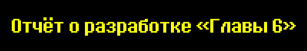
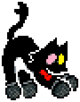
Разработка «Главы 6» продвигается нормально.
Игра сейчас на стадии структурно готового чернового варианта, который можно пройти от начала до конца. Все карты, события и битвы готовы (хотя разработка одного опционального события сейчас слегка подзатянулась).
К моменту вашего прочтения мы уже должны были приняться за локализацию на японский и предварительное тестирование. Основа игры, по сути, готова... но некоторые важные сцены и детали пока ощущаются сыроватыми, поэтому до полноценного тестирования нам нужно потратить ещё какое‑то время на доработку.
Хоть «Глава 6» сама по себе не такая большая, я бы хотел, чтобы она выглядела как можно лучше. В спешке я не смогу работать.
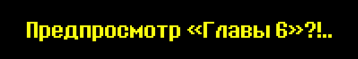
Голоса ПОДСЧИТАНЫ.
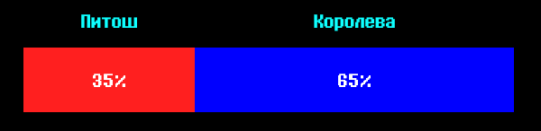
Выиграла Королева!!!

В награду вы получаете бессмысленную сцену из 6-й главы.
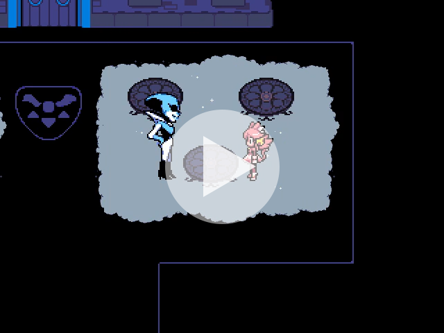
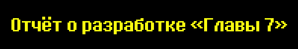

Что ж, мы только начали...
Я зачитал команде сюжет и диалоги 7-й главы, но на самом ключевом моменте я остановился... Объяснил я это тем, что когда разработка дойдёт до нужной стадии, тогда и прочитаю.
Все согласились, что так будет интереснее.
Те участники, чья работа над «Главой 6» завершена, перешли к «Главе 7». В отличие от всех остальных глав, в этот раз я знаю, что делаю, и чувствую себя намного увереннее!..
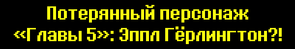
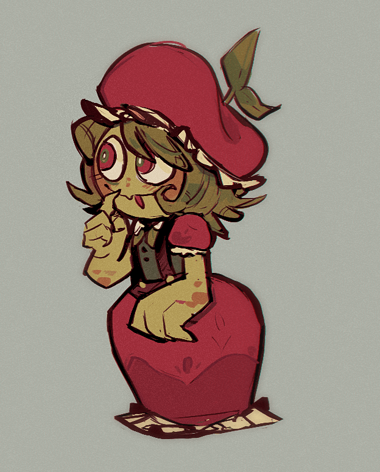
Очень-очень давно я попросил свою подругу Марину нарисовать для 5-й главы персонажа по имени Эппл Гёрлингтон. Она должна была быть лавочницей в первой зоне и продавать сладкие яблочки. Как обычно это бывает, если вам не понравились её яблоки, она начинала злиться...
Но в итоге мне стало казаться, что она слишком пересекается характером с Розой (Pink), поэтому я решил не включать её в игру. Плюс тема яблок приобрела в сюжете несколько другое значение и иначе бы это выглядело странно.
Вышла новая работа Тревора Алана Гомеса из серии DELTARUNE Piano Collections. Композицию из первого альбома я использовал в титрах 5-й главы... так что мне не терпится изучить новый альбом!
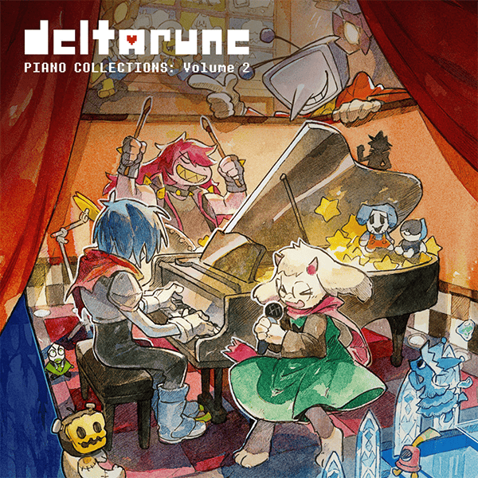
Чё-то понаделали.

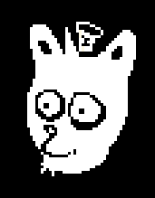
Кажется, я говорю это из раза в раз, но после «Главы 4» команда пополнилась новыми участниками, и, чтобы разработка шла как можно быстрее, мне приходится тратить на это всё больше и больше времени. Наверное, отсутствие новостей может раздражать, но на самом деле отсутствие новостей — это хорошие новости.
Приду с очередными новостями, когда локализация «Главы 6» будет готова!